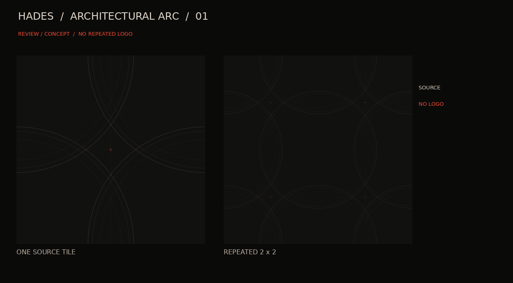

SURFACE SYSTEM 01 / REVIEW / CONCEPT
Architectural Arc. Quiet structure, repeated.
One very subtle, repeatable pattern with fine architectural arcs and a rare vermilion registration point. Its geometry contains no logo. The owner authorized publication of these review assets; no master-brand approval or unrestricted use license is implied.
Live repeating SVG source, not an illustration substituted for the vector.

Rendered from the source SVG; review only.
Downloads / reference sources
SVG · editable patternPNG · tile 1024pxPNG · seamless 2048px repeatPSD · layered background / lines / accentZIP · complete review packSVG · transparent vector engraving


The owner-approved signature color is #EF4B32. Other neutral tones, final print conditions and this motif itself remain under review. These SVGs are decorative background graphics, not an original vector logo. The four official logo files are unchanged.